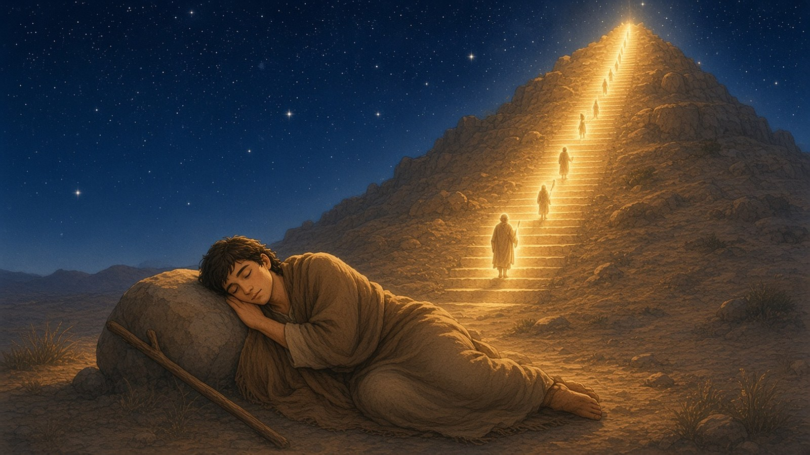
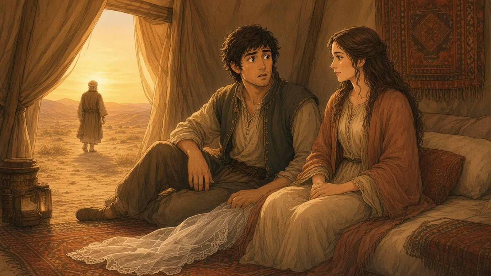
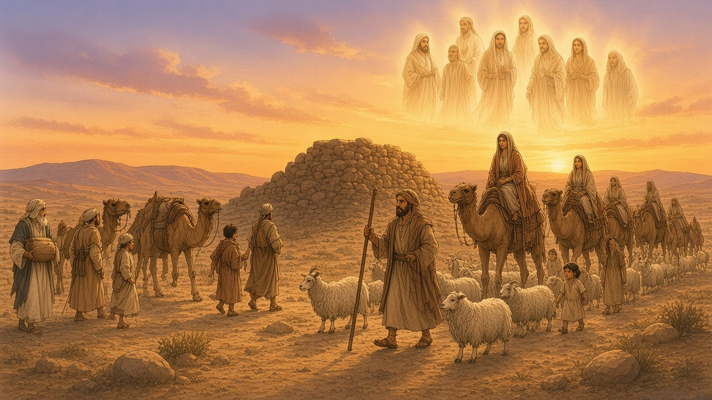

📜 Vayetzei (וַיֵּצֵא): And I Did Not Know It
Shabbat 21 November 2026 · 11 Kislev 5787 · Genesis 28:10–32:3
Last week, a young man walked into a dark tent pretending to be his older brother and fooled his blind father. This week he finds out what it feels like to be the one in the dark.
The portion is called Vayetzei, "and he went out," and it begins with exactly that: Yaakov went out from Beersheba and set off toward Haran. No farewell scene. No packed camels. Later he will say that he crossed the Jordan with nothing but his walking stick. Behind him is a brother who has promised to kill him the moment their father is buried. Ahead of him is an uncle he has never met. In between is a lot of rock.
Rashi asks a nicely nosy question: why does the Torah bother saying he left Beersheba? Wasn't it enough to say where he was going? His answer is that when a good person leaves a town, the town notices. Its glow goes with him. Anyone who has ever waved goodbye at Tullamarine knows the feeling from the other side.
Then the sun goes down, suddenly. Rashi says it set early, as if heaven had planned the stop. The Torah says Yaakov vayifga bamakom, "came upon the place." It does not tell us which place. It just keeps saying the place: he took stones of the place, he lay down in that place. Three times makom in one verse, like a director tapping the floor with his foot: pay attention to where you are standing.
Yaakov does not pay attention. He is exhausted and scared. He arranges some stones around his head, against wild animals, and falls asleep on the most uncomfortable pillow in the Bible. Rashi, quoting the Talmud, adds a gloriously silly scene: the stones start arguing over which one gets to have this righteous head resting on it, until God merges them into one. That is why, the next morning, the Torah talks about "the stone." Even the rocks of the place knew something was happening. The man lying on them did not.
Did you know — הידעתם — that vayifga can also mean "to pray"? From this one word the Talmud says Yaakov invented the evening prayer, Arvit. Avraham got mornings, Yitzchak got afternoons, and Yaakov got the night shift. Every evening service ever since is, in a way, a frightened young man on a hillside at sunset.
He dreams.
Vehinei — and look! — a sullam, a ladder or a stairway, planted on the earth with its top reaching the sky. Vehinei — angels of God going up and down on it. Vehinei — God standing over him. Rabbi Jonathan Sacks noticed that the dream keeps saying "and look!", as if the Torah is grabbing Yaakov by the collar. Notice that the angels go up first. Rashi explains it as a shift change at the border: the angels who looked after him in the Land went up, and a new team came down for the road abroad.
Did you know — הידעתם — that the Rabbis played number games with that ladder? In Hebrew gematria, sullam (סֻלָּם) adds up to 130, and so does Sinai (סִינַי). So one midrash says the ladder was really Mount Sinai: the place where heaven and earth would one day touch for the whole people.
God's words are the ones a runaway needs to hear: the land under you is yours, your descendants will be like the dust of the earth, and — the important part — "I am with you. I will guard you wherever you go, and I will bring you back."
Yaakov wakes up and says the line that this whole story turns on:
Achen yesh Adonai bamakom hazeh, ve'anochi lo yadati. "Surely God is in this place — and I did not know it."
Rashi gives the first, very human reaction: had I known, I would never have napped here. It is the spiritual version of discovering you have been sitting on the Queen's chair in the museum. Then the fear and wonder catch up with him: "How awesome is this place! This is none other than the house of God, and this is the gate of heaven."

He stands the stone pillow up as a pillar, pours oil on it, and renames the town. It used to be called Luz. Now it is Beit-El, "House of God." And then, being Yaakov, he negotiates. If God will be with me, if He will give me bread to eat and clothes to wear, if I come back home in peace, then the Lord will be my God, and I will give a tenth of everything.
That is not exactly faith. It is a contract. Yaakov has just learned his first lesson — that he does not always know where he is — and he walks off down the road still thinking like a man who must read the small print. He is about to meet someone who writes small print for a living.
The road ends at a well.
There is a large stone over it (this story is full of stones), and shepherds are standing around waiting, because the stone is too heavy, and the custom is to wait until all the flocks gather and roll it off together. Yaakov makes polite conversation. Do you know Laban? Oh yes. Is he well? Very well — and look, here comes his daughter Rachel with the sheep.
Yaakov, who left home with only a stick, walks up and rolls the stone off the well by himself. He waters her whole flock. Then he kisses Rachel and bursts into tears.
Why cry? Rashi offers a heartbreaking answer. When Avraham's servant came to this family to find a bride for Yitzchak, he arrived with ten camels loaded with gifts. Yaakov arrived with nothing. On the way, says the midrash, Esav's son Eliphaz chased him to kill him, but Eliphaz had grown up on Grandpa Yitzchak's knee and couldn't do it. So Yaakov said: take everything I have, a poor man counts as dead, and you can tell your father you finished the job. The young man at the well is in love, and broke, and very far from his mother.
Laban comes running. He hugs him, kisses him, brings him home, and says, "You are my bone and my flesh." A month later, he asks — generously, it seems — "Just because you are my relative, should you work for nothing? Tell me your wages."
Here the story plants two details we will need later. Laban has two daughters. The elder is Leah, and her eyes, says the Torah, were rakkot — a word that might mean weak, or soft, or tender. The younger is Rachel, beautiful in form and beautiful to look at. The Torah never says Leah was ugly. It says something about her eyes. Rashi says they were tender from crying, because everyone in town said: Rivka has two sons, Laban has two daughters, the older will marry the older. Leah had spent her girlhood dreading a marriage to Esav.
Yaakov does not notice any of this. He only sees Rachel. "I will work for you seven years for Rachel, your younger daughter." And then comes the most romantic line in Genesis:
Vayihyu ve'einav keyamim achadim be'ahavato otah. The seven years seemed to him like a few days, because he loved her.
Love is a wonderful thing. It is also, as every teenager discovers, a terrible pair of glasses.
Seven years pass. The Talmud adds one more detail, through Rashi: Rachel knew her father, so she and Yaakov agreed on secret signs, a private password for the wedding night, in case Laban tried anything. Yaakov feels safe. He has a system.
Laban throws a feast for the whole town. It gets late. The bride is veiled. The tent is dark. And — notice how the darkness of the tent echoes last week, when an old man's eyes had grown dim — the groom can see nothing at all.
The midrash, in Bereshit Rabbah, turns the evening into a town-wide prank. The locals are in on the secret, it says, and all through the party they sing "Ha-Leah! Ha-Leah!", which sounds like a cheerful wedding chant and also means "It's Leah! It's Leah!" Yaakov dances along and gets none of it. And the signs? According to the Talmud, Rachel, picturing her sister humiliated in front of everyone, quietly handed Leah the password. The romantic heroine of this story is the one who makes the switch work.
Vayehi vaboker vehinei hi Leah. "And it was morning — and behold, it was Leah."
Five Hebrew words, and the best plot twist in Genesis.

Yaakov storms out to Laban. "What is this you've done to me? Wasn't it for Rachel that I worked for you? Why did you deceive me — lamah rimitani?"
There is a word for a man who disguised himself in a dark tent and took what was meant for an older brother, and Yaakov is not in a position to use it.
Laban's answer is pure, polite poison: Lo ye'aseh chen bimkomenu. "It is not done in our place to give the younger before the firstborn." Our place. The Torah's word again, makom. At Bethel, Yaakov discovered God was in the place. Here he discovers that every place has its own rules, and Laban wrote these ones. And the word for firstborn daughter, bechirah, sounds a lot like bechorah, the birthright Yaakov once bought with a bowl of lentil soup. The Torah never says "this is payback." It just lets the words rhyme.
The midrash, of course, can't resist saying it out loud. It imagines Yaakov shouting at Leah: "Deceiver, daughter of a deceiver! Didn't I call you Rachel all night, and you answered me?" And Leah replies: "Is there a barber without students? Didn't your father call you Esav, and you answered him?" That exchange is midrash, not Torah. In the verse, Leah says nothing at all. Which is its own answer.
Did you know — הידעתם — that many Ashkenazi weddings still begin with a ceremony called the bedeken, where the groom himself lowers the veil over the bride's face before the chuppah? The popular explanation is simple: make sure you have the right bride. Nobody wants to be Yaakov. (There is another explanation too, going back to Rivka covering her face when she first saw Yitzchak, and Sephardi weddings don't usually have it.)
So: finish the wedding week with Leah, says Laban, and you can have Rachel too — for another seven years.
Yaakov now has two wives. He has woken up twice in this story, once to discover God, once to discover Leah. You would think a man who has been taught that lesson twice would start looking more carefully at what is in front of him.
He doesn't. Not yet.
The story moves into the tents of two sisters, and Yaakov keeps not-seeing.
"God saw that Leah was unloved," says the Torah — God saw, because her husband didn't — and Leah has a son. The names she gives her children are a diary written in public. Reuven: "God has seen my suffering; now my husband will love me." Shimon: "God heard that I am unloved." Levi: "this time my husband will be attached to me." Three babies, three messages slipped under the door of a husband who isn't reading them.
Then the fourth. And something changes. Hapa'am odeh et Adonai. "This time, I will thank God." She names him Yehudah.
She stops waiting for Yaakov to see her. She starts seeing what she has.
Did you know — הידעתם — that the Talmud says no one in history had thanked God until Leah did? And that the name she chose, Yehudah, became the name of a tribe, then a kingdom, then a whole people? Yehudah → Yehudim → "Jews." Every Jew is, in a sense, named after a thank-you from a woman nobody noticed. Todah, thank you, and Modeh Ani, the first words of the morning, come from the same root.
Meanwhile Rachel, loved and childless, is in agony. "Give me children, or I will die," she says to Yaakov. And he snaps: "Am I in God's place?" It is a terrible answer, and the commentators know it. The midrash, quoted by Ramban, has God scolding Yaakov: is that how you answer a woman in distress? Yaakov, master of contracts, has no idea how to listen to the people he lives with.
What follows is not a list of twelve births; it is a tent turning into a nursery while two sisters compete through their maids, Bilhah and Zilpah, and even through a bunch of mandrakes — duda'im — that little Reuven finds in the field. (Yes, the same plant that screams in Herbology class in Harry Potter. In Genesis it is a fertility charm, and the two sisters trade a night with Yaakov for it.) Eleven sons and a daughter, Dinah. Rashi says that even here the sisters looked out for one another: Leah, pregnant a seventh time, prayed that the baby would be a girl, so that Rachel would not end up with fewer sons than the maids.
And finally, "God remembered Rachel." She has a son, Yosef.
The moment Yosef is born, Yaakov turns to Laban and says: send me home.
Laban, it turns out, has noticed something too. Whenever Yaakov is around, the flocks multiply. So he does what bosses from hell have always done: "Name your wages." Yaakov asks only for the speckled and spotted animals. Laban agrees — and that same day secretly removes every speckled, spotted and dark animal and sends them three days' journey away.
Yaakov answers with a very strange breeding programme. He takes fresh sticks of poplar, almond and plane, peels white stripes into them, and sets them at the watering troughs where the flocks come to mate. The flocks produce streaked, speckled and spotted young. Yaakov gets rich.
Did you know — הידעתם — that Laban's name, Lavan, means "white"? Look at the verse with the sticks. Yaakov takes rods of livneh (poplar), peels petzalot levanot (white stripes), and exposes halavan (the white). Three "white" words to outwit Mr White. Nobody needs a commentator to enjoy that. Notice also that one of the trees is luz, almond — the old name of Bethel, where the story began.
Did you know — הידעתם — that there is a real sheep breed called the Jacob sheep? It is spotted, often has four horns, and is named for this chapter. No, they are not descended from his actual flock.
But here Yaakov does something new. When he tells his wives about it, he doesn't credit the sticks, or his own cleverness. Your father cheated me, he says, and changed my wages ten times, "but God did not let him harm me." God took your father's flocks and gave them to me. The man who once bargained if You feed me, if You bring me home is finally saying out loud who was protecting him the whole time.
And for the first time in the whole portion, Rachel and Leah agree on something. "Our father sold us," they say, "and has used up our money. Whatever God has told you, do it."
So the family slips away while Laban is off shearing his sheep. Rachel, on her way out, steals her father's household idols, the terafim. (Why? The Torah doesn't say. Rashi suggests she was trying to wean her father off idol worship. Scholars have other ideas.) Three days later, Laban finds out and gives chase. Seven days after that he catches up with them in the hills of Gilead — and that night God appears to him in a dream: be careful not to say anything to Yaakov, good or bad.
When he catches up, he searches every tent for his gods. Rachel has hidden them in the camel's saddle and is sitting on it. "Don't be angry, my lord," she says, "I can't get up; I have my period." Laban searches everything and finds nothing. (Yes, the Torah has a sense of humour.)
Then Yaakov, finally, loses his temper, and twenty years of grievances come out in one go: the torn sheep he paid for out of his own pocket, "heat consumed me by day and frost by night, and sleep fled from my eyes," the ten wage changes. Laban answers with the line that says everything about him: "The daughters are my daughters, the children are my children, the flocks are my flocks — all that you see is mine."
Did you know — הידעתם — that Laban is the villain of the Passover Haggadah? "Go and learn what Laban the Aramean tried to do to our father Yaakov: Pharaoh decreed only against the boys, but Laban tried to uproot everything." Grandparents have been reading that line at seder for decades. It's Uncle Laban, the man who thought everything he could see belonged to him.
They make a treaty. They pile up stones — yes, more stones — into a heap. Laban names it in his language, Aramaic: Yegar-sahadutha. Yaakov names it in Hebrew: Gal-ed. Both mean "heap of witness." Did you know — הידעתם — that this is usually noted as the only Aramaic phrase in the Five Books of Moses? Two languages at one border.
And they give it one more name, Mizpah, "watchtower": "May God watch between me and you when we are out of each other's sight." Did you know — הידעתם — that the Victorians turned that line into sweetheart jewellery? "Mizpah" brooches and coins split in two were given by lovers who were going to be apart. Which is very sweet, until you remember the original: two men who don't trust each other agreeing never to cross a line.
Early in the morning, Laban kisses his grandchildren and his daughters, blesses them, and goes home.
Yaakov goes on his way. And angels of God meet him.
That's all the Torah says: they met him. No ladder, no dream, no speech. But look at what happens next. Vayomer Yaakov ka'asher ra'am: "And Yaakov said, when he saw them: this is God's camp." He names the place Machanayim, "two camps." Rashi says it is the shift change again, in reverse: the angels who escorted him abroad, and the angels of the Land coming to bring him home.
Twenty years earlier, God stood right over him on a hillside, and he only realised it in the morning: and I did not know. This time, awake, in daylight, on a dusty road, he knows the moment he sees them.

Did you know — הידעתם — that in a Torah scroll, this entire portion, from the stone pillow to Machanayim, has no paragraph break? In the Masoretic text, there is no open or closed paragraph mark from 28:10 to 32:3 — 148 verses in one block. The scroll itself tells it as one continuous story. Which makes sense, because it is one story: the slow education of Yaakov's eyes.
He went out as the young man who fooled a blind father. He comes back as someone who has been fooled himself, who has watched the unloved wife become the grateful one, who has learned that the rocks and the wells and the sheep were never really his doing. He still has a lot to learn. Next week, he has to look into the face of the brother he ran away from, and that is another story.
But for now, standing at the border, he can see the angels.
Not bad for a man who once slept straight through a stairway to heaven.